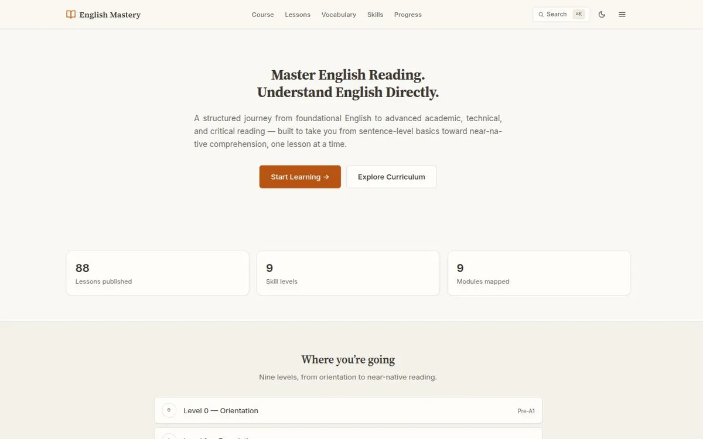

A structured English course, 88 reading lessons across nine levels, built as a Markdown-driven static site so adding a lesson is a one-file change.

A structured English reading course that runs from sentence-level foundations to near-native critical reading, across nine skill levels, and keeps growing without a redesign. The repository describes it as a long-term platform rather than a one-off site, so the hard part was the architecture, not the first ten lessons.
Learners working on English reading, writing and speaking. There is no account and nothing to install; progress is stored in the browser. I have no usage figures for this site, so I make no claim about how many people use it.
Content had to scale past lesson 85 without touching existing code. Search engines and readers without JavaScript had to receive real lesson content rather than an empty shell. No framework runtime could ship to the browser. Speaking practice could not depend on hosted audio files or uploads.
Three separate systems: one Markdown file per lesson (metadata plus body), a curriculum taxonomy of levels, modules and skills that lessons plug into, and presentation code that reads both. Nothing in the build hard-codes a lesson number, title or count.
A generator, not hand-written pages or a client-side app. Hand-written HTML would repeat the header, navigation and search markup in hundreds of files. A client-side app would show search engines and no-JavaScript readers an empty shell plus a loading flash. A build-time generator produces real per-lesson HTML from one shared layout.
No lesson-number routing table. A single object listing every lesson would make each new lesson edit the same file and would couple content back into code. With one file per lesson and schema-checked metadata, adding lesson 86 touches exactly one new file.
Derived indexes. The vocabulary index is not a separate data file. The build scans every lesson for vocabulary blocks, so a word is written once, where it is taught, and the index, including which lessons use it, regenerates itself.
Speaking practice without a backend. Self-recording keeps audio as an in-memory blob and never writes it to local storage or uploads it, because a single clip could exceed the roughly 5 MB storage quota and silently corrupt saved progress. Model-voice playback uses the browser’s built-in speech synthesis, so no audio files are hosted.
Rebuilt, not patched. The project started as a Next.js and TypeScript version and was rebuilt as plain HTML, CSS and vanilla JavaScript. The content model and curriculum carried over unchanged; only the rendering layer changed.
A content check validates every lesson file against the schema before each build, and warns when a published reading lesson is missing its writing or speaking pair. GitHub Actions runs the full build on every push and pull request, and the recent runs are green.
88 reading lessons, 87 paired writing tasks and 87 paired speaking drills (lesson 0 is a course orientation and has no pair), across nine skill levels. The live sitemap lists 290 URLs.
Every content change is a full static rebuild; there is no hot reload, though the build is fast. Progress lives in the browser, so it does not sync across devices. Writing and speaking are self-checked against model answers and rubrics; the site deliberately does no automated assessment of speaking.
Live and deployed automatically. It is a content platform that is still being written, so the lesson count will keep changing.